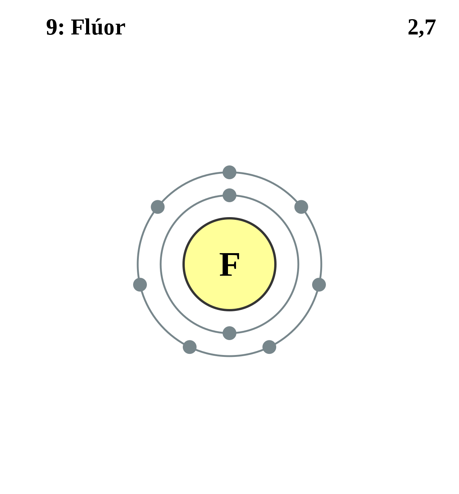

|
|
||
|
FLUOR Es el elemento con mayor electronegatividad y reactividad de todos. Su gas es de color amarillo pálido, es corrosivo y reacciona con la mayoría de las sustancias orgánicas e inorgánicas. El flúor puro y los iones de fluoruro son altamente tóxicos y presentan un característico olor penetrante. El flúor y sus compuestos ayudan a producir uranio (a partir de hexafluoruro) y más de 100 productos químicos comerciales y plásticos para altas temperaturas. El ácido fluorhídrico se utiliza para grabados en vidrio y los fluoroclorohidrocarburos como refrigerante para aires acondicionados y refrigeración. |
 |
DATOS Número Atómico: 9 Peso Atómico: 19 Electronegatividad: 3.98 Configuración Electrónica: [He]2s22p5 Estados de Oxidación: -1 No. de Electrones de Valencia: 7 |